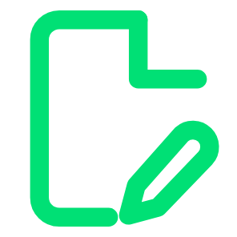
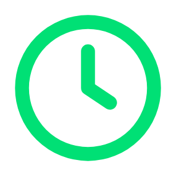
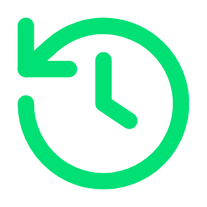

Oplossing
Geld besparen

Start met een eerste versie

Minder beoordelingsuren

Eerder een cijfer
Consistentie
Dezelfde rubric voor elke opdracht
Uitlegbare cijferopbouw per criterium
Kalibreren begint bij de inhoud

5